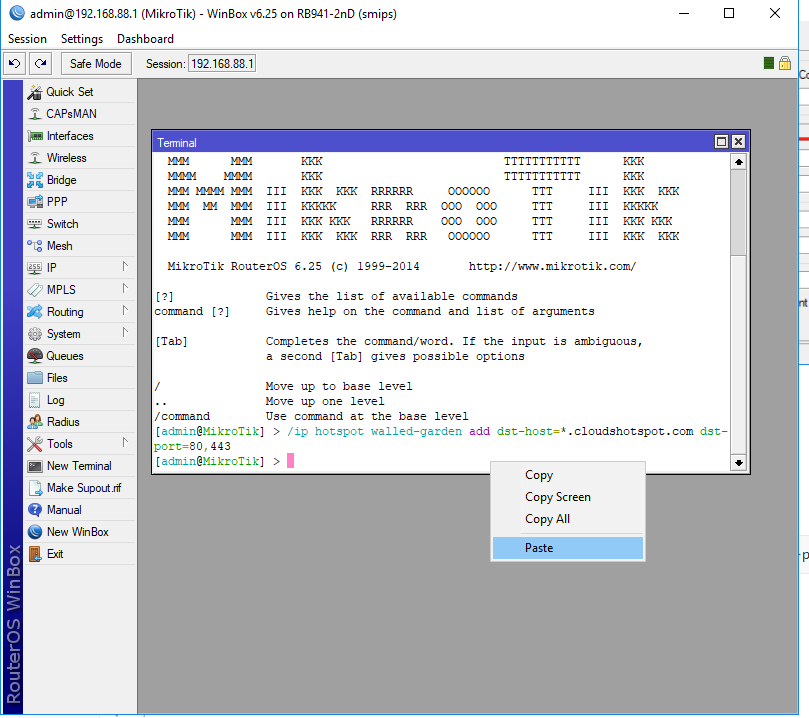

Mikrotik RouterOS Radius AAA授权认证
设置Hotspot Profile 属性
1.1 打开 Hotspot server Profile 界面

1.2 设置Hotspot Server Profile属性
**提示：打开HTTP PAP,MAC Cookie

设置 Hotspot Radius AAA授权认证
1.3设置使用Radius,勾选启用.注意,请把Accounting勾选去掉

1.4设置Radius服务器

配置Cloud Hotspot 属性代码
1.5 设置Walled-Garden 放行代码（必需）
请复制以下代码
/ip hotspot walled-garden add dst-host=*.cloudshotspot.com dst-port=80,443
1.6 配置Terminal终端代码
请将复制的代码粘贴
